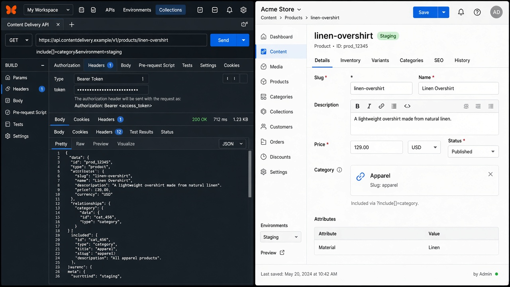

Lab 08 — Regression, contract checks, and defect writing
Time: 90 minutes
Layer: All three
Exit: Five defects (or simulated defects) written to the project standard.

---
1. Plant bugs (on purpose)
Perform these on staging only. Write a defect for each using defect-taxonomy.md.
| # | Plant | Layer you should assign |
|---|---|---|
| 1 | Publish landing page that references an unpublished product | A / B |
| 2 | Save a title change; do not publish; claim “site is wrong” if you only looked at Preview | B (not a bug if CDA is old) |
| 3 | Localize FR title; forget to publish FR | B |
| 4 | Rename a field UID cta_label → cta_text on hero | B + C (contract break) |
| 5 | Publish new asset; entry still points at old published asset | A |
Revert the UID rename after you capture the defect — it will break later demos.
---
2. Mini contract test (manual is fine)
Save staging CDA JSON for linen-overshirt with includes as notes/contract-product.json.
Required keys:
title, slug, sku, price, category.title, hero_image.urlIf any key disappears after a content-type edit, fail the “build.”
Optional later: assert this in CI with a delivery token stored as a secret.
---
3. Defect quality bar
Each defect must contain:
- Title:
[Horizon][staging][en-us] unpublished category blanks PDP - Layer: A / B / C
- Stack, environment, locale
- Content type UID, entry UID, version
- Steps
- Expected vs actual
- Evidence: CDA snippet (redact tokens), CMS screenshot, optional site screenshot
- Owner hint: Editor / CMS admin / Frontend / DevOps (webhooks)
Weak (do not write)
> Homepage broken. Please check.
Strong
> Layer B. landing_page blt123 v4 published to staging en-us. CDA sections[0].products is ["blt999"] with no include expansion; blt999 GET on staging returns 404 (entry unpublished). Frontend PDP grid empty. Publish blt999 to staging or remove the reference.
---
4. Capstone (optional same day)
With a partner acting as editor:
- Brief: “Ship Spring Edit to staging, FR title on hero, no production.”
- You write a 15-minute test plan from the acceptance pack.
- Execute. Sign off or block with one strong defect.
---
Pass
- Five defects meet the quality bar (or 3 planted + 2 from earlier labs)
- Contract JSON saved
- UID rename reverted
- You can explain why Preview ≠ CDA in one sentence
---
Training complete. Use checklists/ on the first real project. Re-read TRAINING-SUMMARY.md definition of done and self-score.